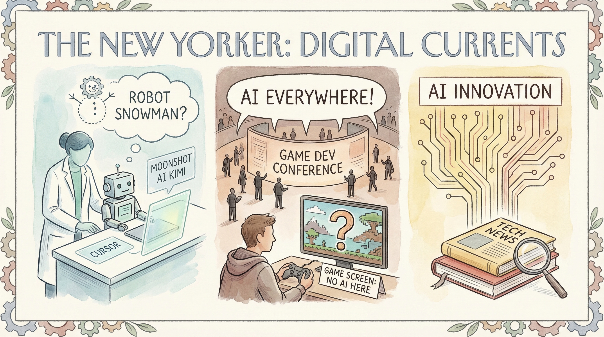

Cursor承认其新编码模型基于Moonshot AI的Kimi构建
两克伴AIGC日报
2026-03-23 星期一

本期关注：Cursor承认新编码模型基于Moonshot AI的Kimi构建，15岁开发者用Llama 3.1 8B和CrewAI本地搭建自主AI法庭实现代理协作辩论，ClaudeRank开源为Claude Code提供token并发工具，OpenAI联合创始人Karpathy称数月未写代码处...
📰 行业动态
NVIDIA CEO黄仁勋在GTC大会上讨论了NVIDIA的未来
AI在游戏开发者大会上无处不在，但游戏本身却未涉及AI
OpenAI联合创始人Karpathy表示自己已数月未编写代码，处于‘精神错乱’状态
🔥 今日焦点
15岁的开发者Ali Suat利用本地硬件成功构建了一个名为“AI-Court Supreme”的自主AI法庭系统，该系统基于Llama 3.1 8B和CrewAI框架运行。该系统通过上下文协作，实现了三位自主代理——首席检察官、辩护律师和首席审判长之间的辩论。该项目旨在评估本地大型语言模型在复杂法律和技术流程中的表现。Ali Suat采用CrewAI框架建立了分层工作流程，通过模拟法庭审判过程，探讨了多代理推理在AI领域的应用潜力。这一创新实践不仅展示了深度学习在法律领域的应用前景，也为AI领域提供了新的研究思路和案例，对推动AI在司法领域的应用具有重要意义。
---
近日，一位名为ymaws的开发者推出了名为ClaudeRank的开源项目，该项目旨在为Claude Code提供一种基于token和并发功能的工具。ClaudeRank项目位于https://www.clauderank.com/，旨在为开发者提供一种高效、便捷的代码开发工具。
ClaudeRank的核心内容是提供了一种基于token的并发控制机制，旨在提高代码的执行效率和稳定性。在多线程编程中，并发控制是至关重要的，而ClaudeRank通过引入token机制，实现了对并发操作的精细化管理，有效避免了死锁、竞态条件等问题。
近日，一位名为V_Shukla的AI研究者展示了其构建的视频处理流水线的成果。该流水线由一个简单的提示词驱动，实现了从数据预处理到视频生成的全流程自动化。这一突破性进展不仅展示了AI在视频处理领域的强大能力，也为AI领域的进一步发展提供了新的思路。
这一成果的重要性在于，它标志着AI在视频处理领域的应用迈出了重要一步。传统的视频处理流程复杂且耗时，需要大量的人工干预。而通过这一流水线，AI能够自动完成从数据预处理到视频生成的整个过程，极大地提高了效率，降低了成本。这对于视频制作、视频分析等领域具有重要的应用价值。
📚 深度长文
Nathan Lambert在《Lossy self-improvement》一文中，深入探讨了自我提升的真实性与局限性。文章的核心观点是，尽管自我提升是真实存在的，但它并不能带来快速的突破。作者通过一系列关键论据，如人类认知的局限性、技能提升的缓慢过程以及环境因素的制约，阐述了自我提升并非一条通往快速成功的捷径。
文章的深度和独特见解体现在对自我提升这一普遍现象的深入剖析。作者指出，虽然自我提升有助于个人成长，但过度的追求可能导致焦虑和压力，甚至影响身心健康。此外，文章还从心理学、社会学等多个角度，对自我提升的内在机制进行了探讨。
在Frank Andrade的《Claude Dispatch: Text Your Computer. Come Back to Finished Work》一文中，作者揭示了 Cowork 任务的新操作方式，即通过手机远程控制电脑工作。这一创新的核心观点在于，用户无需守在电脑前，即可启动并监控任务执行，电脑在用户离开后仍能持续工作。文章通过具体案例和深入分析，展示了这一技术的关键论据，包括提高工作效率、增强远程工作灵活性以及降低对物理设备依赖等。对于AI从业者而言，这篇文章不仅提供了对新兴技术的洞察，还探讨了人工智能在提升人机交互体验方面的独特见解。其深度和独特性使得阅读此文对于了解未来工作模式和技术发展趋势具有重要价值。
🛠️ 产品推荐
Git-surgeon是一款基于Git的智能代码管理工具，其核心功能是提供类似于`git add -p`的交互式文件添加功能，但通过AI技术实现。该产品能够帮助用户更高效地管理代码变更，特别是对于大文件或复杂变更，Git-surgeon能够自动识别并推荐合适的变更操作，极大提升代码提交的效率和准确性。对于技术从业者而言，Git-surgeon能够有效解决代码管理中的痛点，提高团队协作效率，同时其AI能力的创新点为代码管理带来了全新的解决方案。
---
P-book是一款针对儿童的互动式书籍，旨在通过个性化阅读体验，向孩子们介绍推荐算法的工作原理，包括建议、隐私、过滤泡和公平性等概念。该产品采用开源的互动书籍格式，允许用户通过任务、浏览、阅读或地图等多种方式探索同一主题，从而实现个性化学习。P-book的AI能力在于其个性化推荐和探索方式，旨在帮助孩子们更好地理解复杂的技术概念，提升他们的科技素养。
---
Show HN：AI原生链接树应用——一款现代、简洁且AI友好的Linktree替代应用。该产品旨在为用户打造一个干净、高效的链接管理平台。通过AI技术，该应用能够智能地优化链接布局，提升用户体验。相比传统链接树，Show HN在界面设计、功能优化等方面均有显著提升，为用户提供更加便捷的链接管理服务。